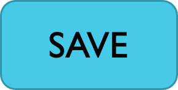
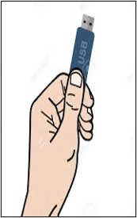

User needs differ



An approach like this needs semantics.
I'm Matthew (he/him), senior accessibility engineer at TPGi, speaking on behalf of the Personalization Task Force.
Chairs: Sharon Snider; Lionel Wolberger
We want to support the next billion users in accessing the web.
We've developed a specification that will help content authors do this, where a small addition of machine-readable semantic metadata supports a range of helpful adaptations.
We are looking for implementations (and other feedback).
Yuki could not really explain her apparent forgetfulness and not being able to focus or complete tasks. She knew that if she came across a long document or web page with dense text she had to find the key points. If the web page failed to have a clear structure, well-spaced and highlighted headings she would be lost and lose concentration. Yuki also said that if she was reading her mobile screen, advertisements appearing between chunks of text upset her focus and she had to stop reading.
However, when there was good use of white space, recognizable icons linking to simple bold text clarifying the important points, Yuki could target these areas and find out what she needed.
A clear summary helped Yuki understand and she could remember much of what she had read.
Accessing critical services…
Standards exist to make these interfaces accessible such as WCAG
But…
An approach like this needs semantics.


Reach the next billion users, by…
Developing support for personalization of content on the web.
Providing the means for authors to supply element-level semantics.
Implementations.
<main> work very well, because there is wide potential applicability/neatness for developers.User need: Many people find too many on-screen options to be problematic. Extra example: someone with a migraine.
Solution: Authors indicate which features are most important.
Demo: https://rawgit.com/ayelet-seeman/coga.personalisation/demo/conactUs.html
<p><strong data-simplification="critical">School will close at 1 pm on Tuesday.</strong> This is because Years 2-3 are putting on a play and we need to get the school hall ready.</p>
<input value="Submit" type="submit" data-simplification="critical"/>
User need: Icons, symbols and pictograms help people identify the purpose of interactive elements. There are many different icons and symbols.
Solution: Authors can markup content to semantically indicate the purpose of an interactive element. The markup will render in the user’s chosen symbol set.
<input type="text" data-purpose="home tel"/>
Benefits: The different purposes of user input controls are already standard.
Demo: http://matatk.agrip.org.uk/personalization-semantics-explorations/demo.html
User need: Users need to understand what a button will do, or where a link will take them.
Solution: Standardise actions and destinations alongside the existing purposes. Support the use of symbols here too.
Demo: http://matatk.agrip.org.uk/personalization-semantics-explorations/demo.html
User need: Users may need symbols to help them understand the concepts behind the content on the page, using the symbol set they know.
Solution: Allow authors to attribute symbol-set-agnostic concepts to parts of the content on the page.

<span data-symbol="13621 12324 17511"> cup of tea </span>
We are only mapping individual concepts to individual symbols—not translating.
User need: Content of various types and purposes can distract users.
Solution: Provide a way for authors to mark up the nature of the distraction, across content types, so they may be filtered out, at the user's request.
<div data-distraction="sensory messages" class="stockticker-widget-container"></div>
Values: messages, offer, overlay, sensory
We need implementations based on the specification.
We look forward to working with you!
This talk was created by members of the personalization task force, with particular thanks to Lisa Seeman, Lionel, and the COGA TF for specific content. Next Billion concept by Raghavendra Satish Peri, Director Accessibility, UserWay.
This is a work in progress.